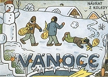

|
POHÁDKOVÉ PØÍBÌHY
V první polovinì 20. století se øada spisovatelù zamìøila na tvorbu pro dìti. Také nìkteøí slovutní autoøi jako Nezval, Vanèura nebo Karel Èapek zkusili oslovit nejmladší ètenáøe. Objevili se i vırazní ilustrátoøi dìtskıch knih. Nìkteøí z nich jako Josef Èapek, Lada nebo Sekora nejen doprovázeli pohádkové pøíbìhy svımi kresbami, ale také psali nové. Pro moderní pohádky je typická civilnost a hravost. Mùeme se v nich rovnì setkat s technickımi vynálezy a dalšími civilizaèními vıdobytky.
|
Ladova ilustrace k jeho knize Bubáci a hastrmani
|
Jan Karafiát (1846-1929)
Karafiátovım rodištìm byl Jimramov, zemøel v Praze. Vystudoval teologii a pùsobil na Valašsku jako evangelickı faráø. Beletrii se vìnoval pouze okrajovì. Napsal knihy Brouèci a Brouèkova pozùstalost nebo autobiografii Pamìti spisovatele Brouèkù.
Vojtìch Preissig: Brouèci
|
Jan Karafiát: Brouèci
Pohádková kniha Brouèci vypráví o ivotì svatojánskıch mušek, které „za nocí svítí lidem i brouèkùm na cestu“. Hlavní postavou je Brouèek, kterı se chystá na první noèní cestu se svım tatínkem a kmotøíèkem. Jejich rodiny èasto navštìvuje osamìlá Janinka. Brouèek se nešastnì zamiluje do berušky Verunky, ale nakonec se oení s dcerou své kmotøenky Beruškou. Narodí se jim spousta malıch brouèkù, postupnì ale umírají jejich rodièe i Janinka.
Brouèci øeší bìné lidské problémy. Autor klade velkı dùraz na køesanské hodnoty, jako je pokora vùèi Boímu øádu, rodina nebo pomoc blinímu. Brouèek je vychováván ke zbonosti, poslušnosti a pøièinlivosti.
|

Které køesanské hodnoty jsou vyzdvieny v této ukázce?
Jak konèí celá kniha Brouèci?
Jakı je rozdíl mezi evangelickım a katolickım faráøem?
|
Ondøej Sekora (1899-1967)
Sekora se narodil v Brnì a zemøel v Praze. Pracoval v Lidovıch novinách jako sportovní reportér. Za protektorátu musel toto zamìstnání opustit. Na konci války byl internován v pracovních táborech Kleinstein a Osterode. Je autorem pohádkovıch knih Ferda Mravenec, Ferda v cizích slubách, Ferda v mraveništi, Trampoty brouka Pytlíka, Malíøské kousky brouka Pytlíka, Èmelák Aninka, Kuøe Napipi a jeho pøátelé, Pošta v ZOO nebo Sedm pohádek. Všechny si Sekora sám ilustroval. Kreslil také obrázkové seriály (komiksy).
|
Ondøej Sekora: Ferda Mravenec
Ferda Mravenec je hlavní postavou tøí Sekorovıch knih, které si autor sám ilustroval, a vystupuje i v nìkolika kreslenıch seriálech. Šikovnı Ferda zaije øadu dobrodruství. Pøi nìkterıch z nich mu sekunduje brouk Pytlík. Kvùli Berušce zkrotí Ferda luèního koníka a osedlá si i pana Hlemıdì. Nakonec se ale dostane pøed soud. Naštìstí se mu podaøí s pomocí kobylky a pavouèka Poutníèka utéct pryè, kde na nìj èekají další dobrodruství. Kromì napínavıch i veselıch historek se ètenáø leccos dozvídá o ivotì hmyzu.
|

Sekora: Ferda Mravenec
Charakterizuj postavy Ferdy Mravence a brouka Pytlíka.
Najdi v ukázce pasáe pouèné a zábavné.
Co si autor vymyslel a co ne?
|
Josef Èapek (1887-1945)
Josef Èapek se narodil v Hronovì a zahynul v koncentraèním táboøe Bergen-Belsen. Byl vıznamnım avantgardním malíøem. S bratrem Karlem napsal povídkové knihy Záøivé hlubiny a jiné prózy a Krakonošova zahrada a dramata Ze ivota hmyzu a Adam Stvoøitel. Samostatnì vydal knihy Lelio, Stín kapradiny nebo Kulhavı poutník. Je autorem esejù Nejskromnìjší umìní a Umìní pøírodních národù. Posmrtnì vyšel jeho deníkovı soubor Psáno do mrakù a sbírka Básnì z koncentraèního tábora. Pro dìti napsal Povídání o pejskovi a koèièce, pohádku O tlustém pradìdeèkovi a loupenících a kníku Povídejme si, dìti.
|
Josef Èapek: Povídání o pejskovi a koèièce
V knize Povídání o pejskovi a koèièce se titulní postavy snaí vypoøádat s bìnımi lidskımi starostmi. Musejí umıt podlahu, zašívají pejskovy roztrené kalhoty, slaví Vánoce, píšou dopis, peèou dort, starají se o panenku, která tence plakala, nebo hrají divadlo. Všechny problémy nakonec vyøeší po svém, ale jejich netradièní øešení nebıvá vdycky nejlepší...
Kapitola Jak pejsek s koèièkou slavili 28. øíjen byla po roce 1948 z knihy vyøazena z ideologickıch dùvodù.
|

Ilustrace Josefa Èapka
Jak pejsek s koèièkou myli podlahu?
Èím zašili pejskovi kaata?
Jak slavili 28. øíjen?
Jak tento státní svátek slavíš ty?
|
Karel Èapek (1890-1938)
Karel Èapek se narodil v Malıch Svatoòovicích a zemøel v Praze. Tento spisovatel patøí k nejvıznamnìjším a nejplodnìjším èeskım autorùm. Pro dìti napsal knihy Devatero pohádek a Dášeòka èili ivot štìnìte.
Co víš o Èapkovi?
Která další Èapkova díla znáš?

Karel Èapek a jeho bratr Josef Èapek
|
Karel Èapek: Devatero pohádek
V pohádkách Karla Èapka jsou typické pohádkové postavy nebo nadpøirozené bytosti konfrontovány s moderní realitou. Najdou si obyèejná zamìstnání a ijí ivotem bìnıch lidí. Strašidla se snaí bıt lidem k uitku. Nemocnı Hejkal se stal politikem, rusalce doktor doporuèil, aby se dala k filmu, poslední kouzelník odcestoval na Saharu a zkouší na poušti vyèarovat „pole a lesy a mìsta a vsi“...
Pro knihu Devatero pohádek napsal Karel Èapek pohádku koèièí, psí, ptaèí, vodnickou, loupenickou, tuláckou, policejní, pošáckou a doktorskou. „Ještì jednu navíc jako pøívaek“ dodal jeho bratr Josef, je to pohádka O tlustém pradìdeèkovi a loupenících.
|

Najdi v ukázce jazykové høíèky.
Èím se Èapkova pohádka liší od klasickıch pohádkovıch pøíbìhù?
Vymysli pro rùzné nadpøirozené bytosti nejpøíhodnìjší povolání.
Kterou pohádkovou bytostí bys chtìl/a bıt? Proè?
Zkus napsat pohádku.
Vytvoøte spoleènımi silami novou pohádku. Kadı ve skupinì musí vymyslet jednu vìtu, kdy na nìj pøijde øada.
|
Josef Lada (1887-1957)
Lada pocházel z Hrusic u Prahy a zemøel v Praze. Svımi kresbami doprovázel øadu knih. Pøátelil se s Haškem a k jeho Švejkovi nakreslil skoro tisíc ilustrací. Sám vytvoøil obrázkové knihy Svìt zvíøat, Veselı pøírodopis nebo Veselé uèebnice. Napsal pohádkové pøíbìhy O chytré kmotøe lišce, Bubáci a hastrmani, Mikeš nebo Nezbedné pohádky. Zajímavá je Ladova autobiografie Kronika mého ivota.

Ladovy kresby

|
Josef Lada: Mikeš
Hlavní postavou Ladovy dvoudílné knihy je mluvící kocour Mikeš a jeho pøátelé – kluk Pepík, kozel Bobeš, prasátko Pašík. Mikeš se jednoho dne rozhodne opustit Hrusice a vydá se do svìta. Doma zatím nastoupí na jeho místo kocourek Nácíèek. Mikeš se dostane k cirkusu a zaije rùzná dobrodruství, ale nakonec se rád vrací domù.
Ladova ilustrace
Další autoøi literatury pro dìti a jejich díla
Vítìzslav Nezval: Anièka skøítek a Slamìnı Hubert, Vìci, kvìtiny, zvíøátka a lidé
Vladislav Vanèura: Kubula a Kuba Kubikula
Jindøich Plachta: Puèálkovic Amina
Josef Štefan Kubín: Lidové povídky z èeského Podkrkonoší
Jan Zrzavı: Jeníkovy pohádky
František Halas: Ladìní
|

Co zaili Mikeš a Pašík na pouti?
Co bys marnì hledal/a v klasické pohádce?
Líbí se ti Ladovy kresby?

Lada: Zvíøátka u jeslièek
Napiš moderní pohádku. Které technické vymoenosti v ní pouiješ?
Zjisti co nejvíce informací o dìtské opeøe Brundibár.
|
Internetové stránky
Èapek, Josef: Povídání o pejskovi a koèièce
Èapek, Karel: Devatero pohádek, Bajky a podpovídky
Èapek, Karel: Dášeòka
Lada
Lada
Lada: O chytré kmotøe lišce
Karafiát
Karafiát: Brouèci
Hrubín: Malı špalíèek pohádek
Exkurze
Hrusice
Hrusice
Rulf: Ladovy Hrusice, èlánek
Tipy
Hmyz
|
Doporuèená èetba
Èapek, Josef: Povídání o pejskovi a koèièce, jak spolu hospodaøili a ještì o všelijakıch jinıch vìcech, Albatros, Praha 2003
Èapek, Karel: Dášeòka èili ivot štìnìte, Kniní klub, Praha 2004
Èapek, K.: Devatero pohádek, Albatros, Praha 2003
Gebhartová, Vladimíra: Literatura pro dìti (s ukázkami textù), SPN, Praha 1987
Karafiát, Jan: Brouèci, SNDK, Praha 1968
Kubín, Josef Štefan: Kniha pohádek, Albatros, Praha 1991
Kubín, J.Š.: Strakatı náslo, Maa, Praha 1997
Kubín, J.Š.: Zlatodol pohádek
Lada, Josef: Kronika mého ivota, ÈSS, Praha 1986
Lada, J.: Mikeš, Albatros, Praha 1974
Lada, J.: Pohádkovı svìt, Eminent, Praha 1997
Ladovy pohádky, Albatros, Praha 1971
Ondøej Sekora, Práce všeho druhu, Práh, Praha 2003
Plachta, Jindøich: Puèálkovic Amina, NADAS, Praha 1992
Sekora, Ondøej: Brouk Pytlík, Albatros, Praha 1974
Sekora, O.: Èmelák Aninka, SNDK, Praha 1968
Sekora, O.: Ferdùv slabikáø, Albatros, Praha 2002
Sekora, O.: Kníka Ferdy Mravence, SNDK, Praha 1968
Všetièka, František: Josef Štefan Kubín, Praha 1980
Zrzavı, Jan: Jeníkovy pohádky, Literární èajovna Suzanne Renaud, Havlíèkùv Brod 1996
|
Vypracuj písemnı referát o nìkteré z uvedenıch knih.

Druhá kniha Ladovıch pøíbìhù o Mikešovi
|
|